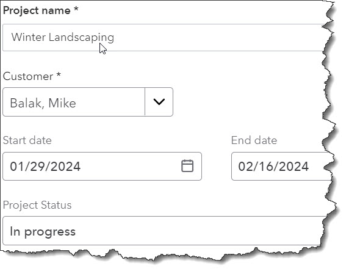
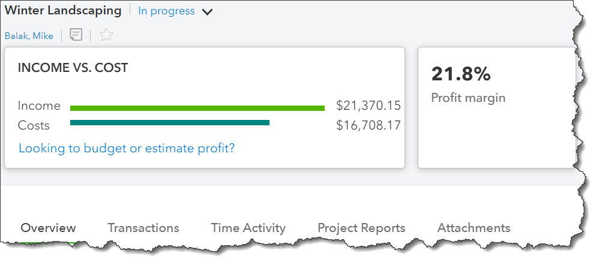

Do you need to track income and costs related to projects? QuickBooks Online makes this easy – and calculates their profitability.
QuickBooks Online can tell you where your money comes from and where it’s going in very detailed, customizable reports. These reports can help you determine, for example, whether you should continue to sell a specific product or whether customers are paying their invoices late.
Sometimes, though, you may want to group all of the income and costs that comprise a specific job. The site’s Project tools can tally all of that automatically. You can determine whether your project-related income, product and service costs, worker costs, and other expenses warrant taking on certain jobs in the future.
If you’re using QuickBooks Online Plus or Advanced, you can use these tools to calculate the profitability of projects by assigning relevant sales, time, and expenses to them. Here’s how it works.
Getting Set Up
Before you start working with Projects in QuickBooks Online, you’ll need to make sure you have the feature turned on. Click the gear icon in the upper right and select Account and settings. Click Advanced in the toolbar and scroll down to Projects. If the button there isn’t green, click it, then click Save. Click Done in the lower right to return to the main screen.
Creating a Project Record
To get started, click Projects in the toolbar to open a comprehensive “homepage.” This will eventually display a list of projects you’ve created that you’ll be able to filter by Status, Customer, and Employee rate. Click New project in the upper right. A panel slides out from the right where you’ll create a project record by selecting a Customer and entering a Project name. Optional fields here include State date and End Date, Status (defaults to In progress), and Notes.
Click Save when you’re done. Now your project name will appear directly under its customer’s name when you’re entering transactions.
Before you start assigning transactions, you’ll create a Project record.
Assigning Transactions to Projects
Now that you’ve created a Project record, you can start assigning income and costs to it. There are seven types of transactions that can be assigned to projects: Invoice, Receive payment, Expense, Estimate, Time, Bill, and Purchase order. Where you enter the project name depends on the form type.
When you’re spending money on a project that you will eventually bill a customer for, (expense, bill, purchase order), you’ll choose a Vendor at the top of the form as you document billable purchases. In the table below (where you enter the products and/or services that you’re buying), you’ll select your Customer/Project in a column there. Be sure there’s a checkmark in the Billable column.
TIP: On Bill and Expense forms, you’ll notice another column in front of Customer/Project labeled Markup %. You can add a percentage to your billables to charge the customer a little extra for your work in obtaining needed materials.
When you’re creating the other four types of transactions (invoices, receive payment, estimate, and time), you’ll find your project listed under the Customer name at the top.
WARNING: When you’re assigning transactions to projects, make sure you select the actual project name, not just the customer name.
The Project “Homepage”Once you’ve created a project, you can get to its relevant “homepage” by clicking it in the list on the main Projects page. This is where you can track each project’s progress, including its real-time profitability.
A project “homepage,” showing its real-time profitability
At the top of this page, you’ll see a line graph like the one pictured above that shows your current Income vs. Cost. And you’ll see a number representing your profit margin. There are also links that take you to reports for open and overdue invoices (not shown here).
A button in the upper right opens links that take you to pages where you can enter project-related transactions. You don’t have to be on the Projects page to enter these transactions, though. You can enter them as you normally would on their own pages and assign them accordingly.
Project “homepages” also contain other types of information. As you can see from the tabs at the bottom of the image above, you can view each project’s:
The mechanics of creating Projects in QuickBooks Online are not difficult, but the process requires precise recordkeeping. You want to make sure that you’re billing your customers for everything you’ve provided and done. Also, if everything is recorded accurately, you’ll be able to look at your profit margins and determine whether you need to make any pricing changes in the future. We’re happy to meet with you if you have questions about recording and analyzing project data – or about anything else related to QuickBooks Online.